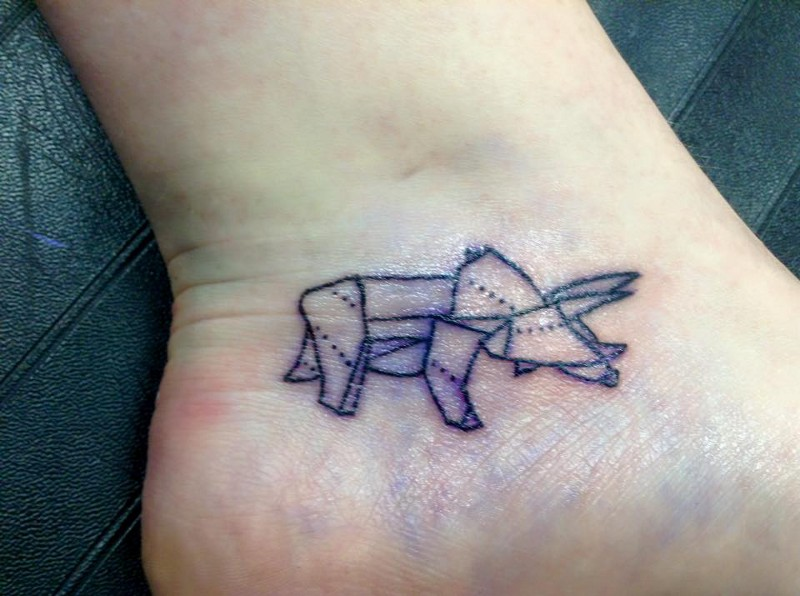
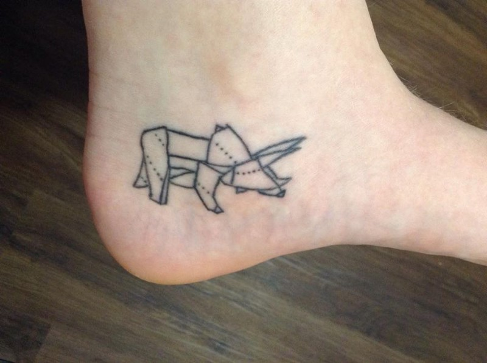

My First Tattoo
Published: 7th May, 2016
On January 11th, 2016 I got my first tattoo. Actually getting it done on this day was a little spontaneous but the idea of having one wasn’t.
After I’d decided I definitely wanted one I spent many months thinking and looking into what tattoo I wanted and where on my body I wanted it. Choosing where I wanted the tattoo was the easiest part as I didn’t want it to be on show all the time just in case my skin reacted badly to the ink. As this was my first tattoo I went with a small and simple design as I wasn’t sure if I’d been able to handle the pain.
My final decision was a dinosaur on my left foot.
As I mentioned above I got the tattoo done on January 11th at Pro Body Huddersfield. I never planned to get it done on that day and went into just discuss the tattoo but while I was there I just decided let’s do this!

The tattoo didn’t hurt as much as I expected but I think this is due to where the tattoo was positioned as the tattoo artist made sure you didn’t go over any bones. Although there was no pain when getting it done walking was a little bit of a struggle especially with shoes on and the next day my foot really hurt. It was a good thing it was a weekend so I didn’t have to move a lot.
As instructed my the tattoo artist I kept the bandage she had put on for two hours and then twice a day for two/three weeks I cleaned the tattoo and put moisturising cream on it (with clean hands). Doing this helped with the healing process of the tattoo.
Once the tattoo had healed I went back to Pro Body for a touch up as I noticed some of the lines had faded. This took about 5 minutes and was free as I went within the 3 months period after my tattoo was done. This actually hurt more that getting it done first time round but the pain wasn’t unbearable. Once the touch up was done I was advised to treat this like a new tattoo so I carried out the same process I did before of cleaning and putting moisturising cream on the tattoo twice a day.

I am really pleased with the look of the tattoo and I’m really glad I actually got one. Although I would love another one I’m in no rush.
Do you have a tattoo? Share a picture along with your experience of having one in the comments below.